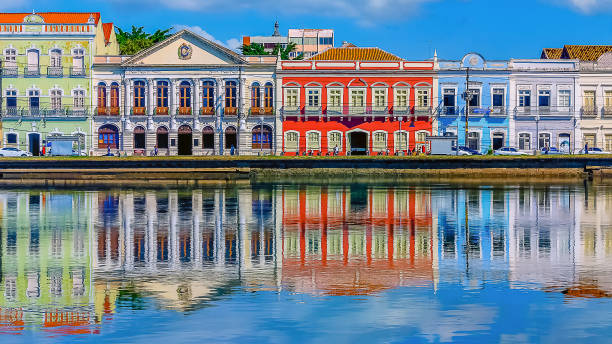

História do Recife
No período colonial, Recife tornou-se um dos principais centros comerciais do Brasil devido à sua localização estratégica e ao porto movimentado. Durante o domínio holandês, entre 1630 e 1654, a cidade se desenvolveu ainda mais, sendo conhecida como Maurícia, em homenagem a Maurício de Nassau. Muitas das influências arquitetônicas deixadas pelos holandeses podem ser vistas até hoje em algumas edificações do bairro.

No período colonial, Recife tornou-se um dos principais centros comerciais do Brasil devido à sua localização estratégica e ao porto movimentado. Durante o domínio holandês, entre 1630 e 1654, a cidade se desenvolveu ainda mais, sendo conhecida como Maurícia, em homenagem a Maurício de Nassau. Muitas das influências arquitetônicas deixadas pelos holandeses podem ser vistas até hoje em algumas edificações do bairro.

A Praça do Marco Zero é um dos locais mais emblemáticos do Recife Antigo. Situada às margens do Rio Capibaribe, é o ponto inicial das medições geográficas da cidade e também um local de grande efervescência cultural, onde frequentemente acontecem eventos, shows e festivais. Outro ponto de interesse é a Torre Malakoff, uma construção do século XIX que servia como observatório astronômico e hoje funciona como um centro cultural. Além disso, a Sinagoga Kahal Zur Israel, a primeira sinagoga das Américas, também está situada no bairro e representa a presença da comunidade judaica na região desde o período colonial.
A Rua do Bom Jesus é uma das mais famosas do Recife Antigo. Com suas fachadas coloridas e charmosas, é um dos lugares mais fotografados da cidade. Aos domingos, a rua se transforma em um grande centro de artesanato e gastronomia ao ar livre, atraindo turistas e moradores locais.
Durante a noite, o Recife Antigo se transforma em um dos principais polos de lazer e entretenimento da cidade. Bares, restaurantes e casas de shows oferecem uma variedade de música ao vivo, indo do forró ao rock, passando pelo tradicional frevo.
Além disso, o bairro abriga importantes eventos ao longo do ano, como o Carnaval do Recife, que atrai milhares de foliões para acompanhar blocos e agremiações tradicionais, como o Galo da Madrugada, considerado o maior bloco carnavalesco do mundo pelo Guinness Book. Com sua mistura de história, cultura e modernidade, o Recife Antigo é um dos destinos mais encantadores do Brasil, proporcionando experiências únicas para quem deseja conhecer a essência de Pernambuco.